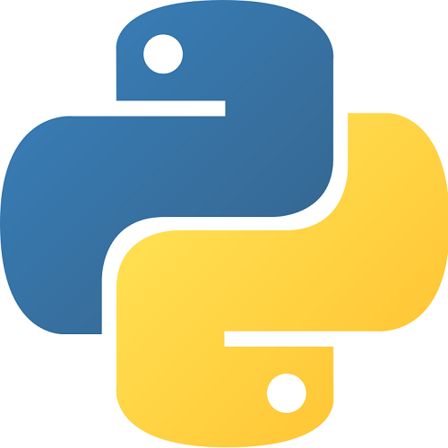
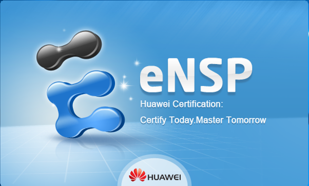

Skills

Python
Have used python programming language for a couple of years. Initially learned the language for academic study purposes. Implemented python regarding machine learning and data visualization. Recently used python to build a book recommender system

Huawei ENSP
Recently picked up ENSP simulation software for academic reasons. Have done many simulations regarding computer network ie. routing & switching.

Cisco Packet Tracer
Have used Cisco Packet Tracer for a couple of years. Completed computer network university class with this software as prerequisite. Have explored most of the features regarding routing & switching in the software.